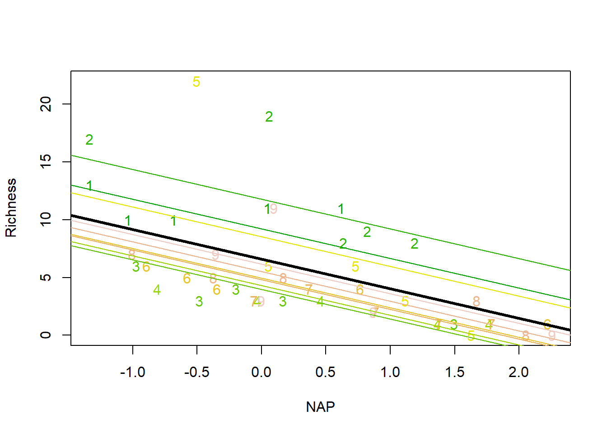

Chapter 18 Random effects and mixed models
Until now, all the predictors in our models were fixed effects, either continous variables or factors for which we are interested in describing how they can be used to model a response variable. Typically, in fixed effect models, all the observations are independent of each other, which induces that the residuals are also uncorrelated.
In this chapter we investigate the use of random effects, which allow us to account for some lack of independence across observations. Random effects can be used to account for the lack of independence induced by say repeated measurements within the same sampling unit, or measurements made over batches of samplin units, like several animals in a litter, or multiple samples withing the same sampling site.
A regression model that included both fixed effects and random effects is a mixed model. If a model only included random effects and no fixed effects it is referred as a random effects model. These are not often used besides some specific contexts, because in most settings there is at least one fixed effect that we are interested in exploring, making most models with random effects mixed models.
To implement mixed models we will consider both the lme function, from the nlme package, and the lmer function, from lme4 package. Note these two packages are developed by different schools of thought, and that will have implications in the corresponding outputs.
We describe the analysis of the RIKZ dataset, a traditional dataset used to illustrate mixed models, a companion to the book by Zuur et al. (2009).
We read in the data
RIKZ <- read.delim("extfiles/RIKZ.txt")
#recoding exposure so that 8 and 10 become 0's and 11's become 1
RIKZ$Exposure=ifelse(RIKZ$Exposure==11,1,0)and check it was properly imported
## Sample Richness Exposure NAP Beach
## 1 1 11 0 0.045 1
## 2 2 10 0 -1.036 1
## 3 3 13 0 -1.336 1
## 4 4 11 0 0.616 1
## 5 5 10 0 -0.684 1
## 6 6 8 0 1.190 2and look at the data structure
## 'data.frame': 45 obs. of 5 variables:
## $ Sample : int 1 2 3 4 5 6 7 8 9 10 ...
## $ Richness: int 11 10 13 11 10 8 9 8 19 17 ...
## $ Exposure: num 0 0 0 0 0 0 0 0 0 0 ...
## $ NAP : num 0.045 -1.036 -1.336 0.616 -0.684 ...
## $ Beach : int 1 1 1 1 1 2 2 2 2 2 ...The data correspond to measurements of species Richness, and two measures of hidro-morphological exposure, NAP and exposure, and the measurements are clustered within beach, with 5 measurements per Beach. There are 9 beaches in total, leading to 45 measurements. They key feature of this data is that measurements within a beach are not independent. This is intuitive: each beach might have intrinsic characteristics that we are unaware of that make the species richness in each beach different from the others
We can look at the response variable, species richness, as a function of the NAP. For illustration, we can also add a simple regression line to the plot. For the time being, there is no notion about the structure of the data, in particular that there are 5 measurements in each beach.

For comparison with the results from a mixed model which we will fit later, we present here the summary of the linear model that ignores this non-independence:
##
## Call:
## lm(formula = Richness ~ NAP, data = RIKZ)
##
## Residuals:
## Min 1Q Median 3Q Max
## -5.0675 -2.7607 -0.8029 1.3534 13.8723
##
## Coefficients:
## Estimate Std. Error t value Pr(>|t|)
## (Intercept) 6.6857 0.6578 10.164 5.25e-13 ***
## NAP -2.8669 0.6307 -4.545 4.42e-05 ***
## ---
## Signif. codes: 0 '***' 0.001 '**' 0.01 '*' 0.05 '.' 0.1 ' ' 1
##
## Residual standard error: 4.16 on 43 degrees of freedom
## Multiple R-squared: 0.3245, Adjusted R-squared: 0.3088
## F-statistic: 20.66 on 1 and 43 DF, p-value: 4.418e-05Considering such a model it seems like the higher the values of NAP the lower the species Richness. The key aspect to bear in mind is that this model ignores the non-independence in the data, which means that it is misleading in that we “pretend” we have more data than we actually have That means that likely the standard errors associated with the estimated parameters are lower than they should be.
To emphasize that data are clustered by beach, we can represent each beach by a beach specific symbol with a different color
## Warning in par(mfwor = c(1, 1)): "mfwor" is not a graphical parameterplot(Richness~NAP,pch=as.character(Beach),col= terrain.colors(10)[as.numeric(Beach)],data=RIKZ)
abline(lm(Richness~NAP,data=RIKZ),lwd=2,lty=2)
We will now model the species Richness as a function of the exposure variables in two stages: (1) we consider the relation between R and NAP, for each beach, and (2) we model the estimated coefficients per beach as a function of exposure
plot(Richness~NAP,pch=as.character(Beach),col= terrain.colors(10)[as.numeric(Beach)],data=RIKZ)
as=numeric(9);bs=numeric(9);exp=numeric(9)
for(i in 1:9){
m=lm(Richness~NAP,data=RIKZ[RIKZ$Beach==i,])
cs=coef(m)
as[i]=cs[1]
bs[i]=cs[2]
exp[i]=RIKZ$Exposure[i*5]
abline(cs,lty=exp[i]+1,col=terrain.colors(10)[i])
}
legend("topright",lty=c(1,2),legend=c("Exposure 0","Exposure 1"),inset=0.05)
Now the second stage
par(mfrow=c(1,2))
boxplot(as~exp,ylab="intercept",xlab="Exposure")
boxplot(bs~exp,ylab="slope",xlab="Exposure")
The way to do all this in one go is to consider a mixed model, where exposure is a fixed effect, but beach is considered a random effect. There are two options available, to assume that each beach will have a random intercept, but the slope of the relation between NAP and Richness is constant, or a model where both the intercept and the slope vary by beach. We call the first a random intercept model, and the second a random slope and intercept model. To fit a random intercept model, with an intercept per Beach, we use the syntax 1|Beach.
Note the different syntax depending on the package used for model fitting. While for lme there is an argument fixed and an argument random, and one must separate the two components of the model, for lmer the random component being just part of a single formula, defined by the formula argument.
First considering nlme
library(nlme)
RIKZ$fbeach=as.factor(RIKZ$Beach)
lme1=lme(fixed=Richness~NAP,random=~1|fbeach,data=RIKZ)
summary(lme1)## Linear mixed-effects model fit by REML
## Data: RIKZ
## AIC BIC logLik
## 247.4802 254.525 -119.7401
##
## Random effects:
## Formula: ~1 | fbeach
## (Intercept) Residual
## StdDev: 2.944065 3.05977
##
## Fixed effects: Richness ~ NAP
## Value Std.Error DF t-value p-value
## (Intercept) 6.581893 1.0957618 35 6.006682 0
## NAP -2.568400 0.4947246 35 -5.191574 0
## Correlation:
## (Intr)
## NAP -0.157
##
## Standardized Within-Group Residuals:
## Min Q1 Med Q3 Max
## -1.4227495 -0.4848006 -0.1576462 0.2518966 3.9793918
##
## Number of Observations: 45
## Number of Groups: 9and then considering lme4
## Linear mixed model fit by REML ['lmerMod']
## Formula: Richness ~ NAP + (1 | fbeach)
## Data: RIKZ
##
## REML criterion at convergence: 239.5
##
## Scaled residuals:
## Min 1Q Median 3Q Max
## -1.4227 -0.4848 -0.1576 0.2519 3.9794
##
## Random effects:
## Groups Name Variance Std.Dev.
## fbeach (Intercept) 8.668 2.944
## Residual 9.362 3.060
## Number of obs: 45, groups: fbeach, 9
##
## Fixed effects:
## Estimate Std. Error t value
## (Intercept) 6.5819 1.0958 6.007
## NAP -2.5684 0.4947 -5.192
##
## Correlation of Fixed Effects:
## (Intr)
## NAP -0.157Note that the model outputs now include a fixed component, corresponding to a global relationship, with a pooled intercept and slope, but also a random component, that describes the variability in the intercepts per beach. This also means that we can now have a relationship at the global level, or at each of the random effects levels, i.e. at the beach level. To obtain the fitted values for each of these different levels we can use the argument level in the call to the functions that interact with the lme object, with level=0 corresponding to the global level, and level=1 corresponding to the random effect level. To extract an estimate of the random effect intercepts we can use function ranef
We can make predictions from the lme model
Look at the fitted model overlaid on the data, at both the global and the random effect levels
plot(Richness~NAP,pch=as.character(Beach),col= terrain.colors(10)[as.numeric(Beach)],data=RIKZ)
#the pooled line
intercept<-lme1$coefficients$fixed[1]
slope<-lme1$coefficients$fixed[2]
#the fixed part, pooled across beaches
abline(intercept,slope,lwd=3)
# LOST CODE ? lines(NAPs,Level0[I],lwd=3)
# note the use of function `ranef` to
# extract the estimated random effects from the fitted model
for(j in 1:9){
abline(a=intercept+ranef(lme1)[j,1],b=slope,col=terrain.colors(10)[j])
}
We can now explore a mixed model where both intercepts and slopes are allowed to vary across beaches, by fitting a random intercept and slope model. That is expressed via the syntax NAP|Beach, which as before is used either for argument random in the lme call (random=~NAP|fbeach) or just within the formula argument for lmer call.
Implementing the mixed model, with random intercepts and slopes, first using lme from nlme
## Linear mixed-effects model fit by REML
## Data: RIKZ
## AIC BIC logLik
## 244.3839 254.9511 -116.1919
##
## Random effects:
## Formula: ~NAP | fbeach
## Structure: General positive-definite, Log-Cholesky parametrization
## StdDev Corr
## (Intercept) 3.549051 (Intr)
## NAP 1.714968 -0.99
## Residual 2.702819
##
## Fixed effects: Richness ~ NAP
## Value Std.Error DF t-value p-value
## (Intercept) 6.588709 1.2647569 35 5.209467 0e+00
## NAP -2.830029 0.7229413 35 -3.914605 4e-04
## Correlation:
## (Intr)
## NAP -0.819
##
## Standardized Within-Group Residuals:
## Min Q1 Med Q3 Max
## -1.8213363 -0.3411033 -0.1674617 0.1921147 3.0396952
##
## Number of Observations: 45
## Number of Groups: 9and then using lmer from lme4
## Linear mixed model fit by REML ['lmerMod']
## Formula: Richness ~ NAP + (NAP | fbeach)
## Data: RIKZ
##
## REML criterion at convergence: 232.4
##
## Scaled residuals:
## Min 1Q Median 3Q Max
## -1.8212 -0.3410 -0.1674 0.1925 3.0397
##
## Random effects:
## Groups Name Variance Std.Dev. Corr
## fbeach (Intercept) 12.600 3.550
## NAP 2.942 1.715 -0.99
## Residual 7.307 2.703
## Number of obs: 45, groups: fbeach, 9
##
## Fixed effects:
## Estimate Std. Error t value
## (Intercept) 6.5884 1.2649 5.208
## NAP -2.8301 0.7231 -3.914
##
## Correlation of Fixed Effects:
## (Intr)
## NAP -0.820
## optimizer (nloptwrap) convergence code: 0 (OK)
## Model failed to converge with max|grad| = 0.00267151 (tol = 0.002, component 1)As before, we can evaluate the model at a global level or at the level of the random effect
and we can now overlay the fitted model over the data
plot(Richness~NAP,pch=as.character(Beach),col= terrain.colors(10)[as.numeric(Beach)],data=RIKZ)
#the pooled line
intercept<-lme3$coefficients$fixed[1]
slope<-lme3$coefficients$fixed[2]
abline(intercept,slope,lwd=3)
#lines(NAPs,Level0[I],lwd=3)
for(j in 1:9){
abline(a=intercept+ranef(lme3)[j,1],b=slope+ranef(lme3)[j,2],col=terrain.colors(10)[j])
}
Zuur says in page 110 we could compare the models by AIC, but that is just nonsense. Having been fitted by REML, no AIC is available
## [1] 247.4802## [1] 244.3839Just for comparison, we could try to see if a simpler random effect model would be a better model. In other words, was NAP required at all or a different mean by beach would suffice?
We can look at the summary of such a model
## Linear mixed-effects model fit by REML
## Data: RIKZ
## AIC BIC logLik
## 267.1142 272.4668 -130.5571
##
## Random effects:
## Formula: ~1 | fbeach
## (Intercept) Residual
## StdDev: 3.237112 3.938415
##
## Fixed effects: Richness ~ 1
## Value Std.Error DF t-value p-value
## (Intercept) 5.688889 1.228419 36 4.631066 0
##
## Standardized Within-Group Residuals:
## Min Q1 Med Q3 Max
## -1.77968689 -0.50704111 -0.09795286 0.25468670 3.80631705
##
## Number of Observations: 45
## Number of Groups: 9Comparing the 3 models regarding AIC
## Warning in AIC.default(lme1, lme3, lme6): models are not all fitted to the same
## number of observations## df AIC
## lme1 4 247.4802
## lme3 6 244.3839
## lme6 3 267.1142we can see that the most parsimonious model is in fact the one with random intercepts and random slopes.
Just checking the correlation between the parameters in the random intercept and slope model, as they seem higly correlated.
Looking at the coefficients
## (Intercept) NAP
## 1 8.421059 -3.656259
## 2 12.363492 -5.536807
## 3 3.806646 -1.505714
## 4 3.562425 -1.385958
## 5 11.200160 -5.137363
## 6 4.426283 -1.775668
## 7 4.082949 -1.644330
## 8 5.099897 -2.106848
## 9 6.335472 -2.721318making a model
plot(coef(lme3)[,1],coef(lme3)[,2],xlab="Intercepts",ylab="Slopes")
abline(lm(coef(lme3)[,2]~coef(lme3)[,1]))
text(10,-3,paste("Correlation is",round(cor(coef(lme3)[,1],coef(lme3)[,2]),5)))
the correlation is in fact very large! Note this correlation is actually an output present in the lme and lmer fitted objects. A very detailed description of what these correlations are when we have more than 1 of them can be found here: https://rpubs.com/yjunechoe/correlationsLMEM. That is a quite advanced topic though.
Note that we could have considered a standard model where beach might be a factor and we would include an interaction between beach and NAP to allow for both different intercepts and slopes across beaches.
##
## Call:
## lm(formula = Richness ~ NAP + fbeach + NAP:fbeach, data = RIKZ)
##
## Residuals:
## Min 1Q Median 3Q Max
## -6.3022 -0.6614 -0.1076 0.4072 5.9090
##
## Coefficients:
## Estimate Std. Error t value Pr(>|t|)
## (Intercept) 10.8219 1.3341 8.112 1.03e-08 ***
## NAP -0.3718 1.5493 -0.240 0.812140
## fbeach2 2.5238 1.7685 1.427 0.165013
## fbeach3 -7.4212 1.7346 -4.278 0.000211 ***
## fbeach4 -7.7342 1.8541 -4.171 0.000281 ***
## fbeach5 1.9609 1.9485 1.006 0.323166
## fbeach6 -6.4973 1.7494 -3.714 0.000938 ***
## fbeach7 -7.3013 2.2611 -3.229 0.003253 **
## fbeach8 -5.8704 1.7981 -3.265 0.002974 **
## fbeach9 -4.5268 1.8631 -2.430 0.022036 *
## NAP:fbeach2 -3.8034 1.9941 -1.907 0.067169 .
## NAP:fbeach3 -1.3835 2.0405 -0.678 0.503511
## NAP:fbeach4 -0.8767 1.9528 -0.449 0.657044
## NAP:fbeach5 -8.5283 2.1340 -3.996 0.000447 ***
## NAP:fbeach6 -1.0167 1.8290 -0.556 0.582872
## NAP:fbeach7 -1.1458 2.2756 -0.504 0.618683
## NAP:fbeach8 -1.5212 1.8134 -0.839 0.408891
## NAP:fbeach9 -2.5957 1.9537 -1.329 0.195100
## ---
## Signif. codes: 0 '***' 0.001 '**' 0.01 '*' 0.05 '.' 0.1 ' ' 1
##
## Residual standard error: 2.479 on 27 degrees of freedom
## Multiple R-squared: 0.8494, Adjusted R-squared: 0.7546
## F-statistic: 8.957 on 17 and 27 DF, p-value: 4.056e-07We can represent the models fitted independently beach by beach we had above with this full model with the interaction term side by side:
par(mfrow=c(1,2))
plot(Richness~NAP,pch=as.character(Beach),col= terrain.colors(10)[as.numeric(Beach)],data=RIKZ)
as=numeric(9);bs=numeric(9);exp=numeric(9)
for(i in 1:9){
m=lm(Richness~NAP,data=RIKZ[RIKZ$Beach==i,])
cs=coef(m)
as[i]=cs[1]
bs[i]=cs[2]
exp[i]=RIKZ$Exposure[i*5]
abline(cs,lty=exp[i]+1,col=terrain.colors(10)[i])
}
legend("topright",lty=c(1,2),legend=c("Exposure 0","Exposure 1"),inset=0.05)
#a single model
plot(Richness~NAP,pch=as.character(Beach),col= terrain.colors(10)[as.numeric(Beach)],data=RIKZ)
#beach 1
abline(a=coef(lmALL)[1],b=coef(lmALL)[2],col= terrain.colors(10)[1],lty=exp[1]+1)
for(i in 2:9){
abline(a=coef(lmALL)[1]+coef(lmALL)[i+1],b=coef(lmALL)[2]+coef(lmALL)[i+9],col= terrain.colors(10)[i],lty=exp[i]+1)
legend("topright",lty=c(1,2),legend=c("Exposure 0","Exposure 1"),inset=0.05)
}and we confirm that the predictions from those models are indistinguishable. That makes sense. A model that allows an interaction term between NAP and Beach is a model where the relation between NAP and species Richness can vary freely by beach, so it is equivalent to having one different line fit to each beach.
We can add the AIC of this model with the NAP and Beach interaction to the above model comparison
## Warning in AIC.default(lme1, lme3, lme6, lmALL): models are not all fitted to
## the same number of observations## df AIC
## lme1 4 247.4802
## lme3 6 244.3839
## lme6 3 267.1142
## lmALL 19 224.4232Interestingly, the model without mixed effects is strongly favored as the most parsimonious model. This is perhaps not surprising given the clearly unrealistic model fits given the data for the model with both random intercepts and slopes for beach and NAP within beach. It seems like the random slope and intercept model cannot adequately represent the data, because the mixed model was not able to truly capture the range of slopes and intercepts required. This might be related to the strong correlation between intercepts and slopes noted above for the random slope and intercepts model. But then, pragmatically, what should one do regarding modelling this data set?
This is not really the outcome I was looking for, because I was hoping to end up with a mixed model being preferred to represent the data.
Nonetheless, the decision to use beach as a random effect or as a fixed effect depends on our objectives regarding the model. In that sense, the choice to use a fixed effects model versus a random effects model is a philosophical one. Given an interest in each of these specific beaches, we could use a fixed effects model. If we are interested in interested on the overal relation between NAP and the species Richness, while accounting for the non-independence of the measurements within a beach, then the random effects models might be more sensible.